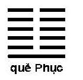

Chương trên, chúng tôi đã đã dịch chữ “thường” (thường đạo) là vĩnh cửu, bất biến. Chữ đó xuất hiện rất nhiều lần trong Đạo Đức kinh và còn nghĩa nữa là phổ biến. Như câu:
“Dân chi tòng sự, thường ư cơ thành nhi bại chi” (ch.64), chúng tôi dịch là “Người ta làm việc, thường gần tới lúc thành công lại thất bại”, cũng có thể hiểu là: có một điều phổ biến là người ta làm việc gần đến lúc thành công thì thất bại.
Hoặc như câu:
“Thiên đạo vô thân, thường dữ thiện nhân” (ch.79), có thể dịch là: “đạo trời không tư vị ai, luôn luôn gia ân cho người có đức”, nghĩa là có một luật phổ biến là người có được thì được trời gia ân.
Một thí dụ nữa trong chương 16:
“Phục mệnh viết thường. Tri thường viết minh, bất tri thường, vọng tác hung. Tri thường dung”.
Có nghĩa là: “Trở về mệnh là luật bất biến (hay phổ biến) của vật. Biết luật bất biến (phổ biến) thì sáng suốt, không biết luật bất biến (phổ biến) thì vọng động thì gây hoạ. Biết luật bất biến (phổ biến) đó thì bao dung.
Luật bất biến trong chương đó tức là luật biến hoá phổ biến trong vũ trụ, nó chỉ huy tất cả mọi sự.
°
° °
Chương trên, Lão tử dùng óc suy nghĩ và trí tưởng tượng mà đoán cái thể của đạo, trong chương này, ông dùng óc quan sát vũ trụ để tìm ra tính cách và qui luật của đạo. Đạo là mẹ của vạn vật, cho nên vạn vật có những tính cách của đạo và phải theo những qui luật của đạo.
Có thể Lão tử nhận thấy rằng trong vũ trụ, sinh vật nào càng nhỏ, càng thấp như con sâu, thì cơ thể và đời sống càng đơn giản, chất phác; còn loài người thì thời thượng cổ, tính tình chất phác, đời sống rất giản dị, tổ chức xã hội rất đơn sơ; càng ngày người ta càng hoá ra mưu mô, xảo quyệt, gian trá, đời sống càng phúc tạp, xa xỉ, tổ chức xã hội càng rắc rối, mà sinh ra loạn lạc, chiến tranh, loài người chỉ khổ thêm; rồi từ nhận xét đó mà ông cho rằng một tính cách của đạo là “phác” (mộc mạc, chất phát), loài người cũng như vạn vật do đạo sinh ra đều phải giữ tính cách đó thì mới hợp đạo, mới có hạnh phúc.
Chương 32, ông viết:
“Đạo thường vô danh, phác”: đạo vĩnh viễn không có tên, nó chất phác.
Chương 37, ông bảo:
“Trong quá trình biến hoà, tư dục của chúng phát ra thì ta dùng cái mộc mạc vô danh (vô danh chi phác) – tức đạo - mà trấn áp hiện tượng đó”.
Chương 28 ông khuyên ta “trở về mộc mạc” (phục qui ư phác).
Như vậy “phác” là một tính cách của đạo, hoặc một trạng thái của đạo. Lão tử dùng chữ đó để trỏ chính cái đạo nữa, vì ông cho nó là rất quan trọng, tượng trưng cho đạo. “Trở về mộc mạc” cũng tức là trở về đạo.
Vũ Đồng trong Trung Quốc triết học đại cương (thương vụ ấn quán) cho rằng “phác” là chất liệu cơ bản của đạo, chất liệu đó khi tản mát ra thì thành những vật cụ thể (vạn vật trong vũ trụ): “phác tán tắc vi khí” (ch.28). Chất liệu đó phải chăng là những đơn chất (corps simples). Hiểu như Vũ Đồng cũng có thể được. Trong chương sau chúng tôi sẽ xét sự áp dụng qui tắc “phác” trong cách xử thế và trị nước.
Một tính cách nữa – cũng có thể nói một qui luật nữa – của đạo là tự nhiên. Phác là một hình thức tự nhiên, nhưng tự nhiên không phải chỉ là phác. Nghĩa rộng hơn nhiều. Trong Đạo Đức kinh, tiếng tự nhiên được dùng nhiều hơn tiếng phác; tự nhiên là một điểm quan trọng vào bậc nhất trong học thuyết Lão tử, nên chương 25 ông bảo: “đạo phác tự nhiên”, nghĩa là đạo theo tự nhiên, đạo với tự nhiên là một.
Một vật gì trời sinh ra, không có bàn tay con người, ta gọi là tự nhiên; một cử động, ngôn ngữ phát ra tự lòng ra mà không tính toán trước, ta cũng gọi là tự nhiên.
Đạo sinh ra vạn vật rồi, để cho chúng vận hành, diễn biến theo luật riêng, theo bản năng của chúng, chứ không can thiệp vào, cho nên Lão tử bảo đạo là tự nhiên.
Chương 51 ông viết:
Đạo sinh ra vạn vật, đức bao bọc, vật chất khiến cho mỗi vật hình thành, hoàn cảnh hoàn thành mỗi vật (…) đạo và đức không can thiệp, chi phối vạn vật mà để vạn vật tự nhiên phát triển.
Chương 37 ông bảo “vạn vật tương tự hoá” (vạn vật sẽ tự biến hoá). “Tự hoá” tức là “tự nhiên phát triển” trong ch.51.
Chính vì đạo để cho vạn vật “tự hoá”, không can thiệp vào, nên đạo không nhận công của nó: “vạn vật thị chi sinh nhi bất tri, công thành nhi bất hữu” – ch.34.
Đạo sở dĩ không can thiệp vào đời sống của vạn vật vì nó không có nhân cách, không có ý chí, không chủ quan. Ý đó không phải riêng của Lão tử. Khổng tử cũng đã nói rồi: “Tứ thời hành yên, bách vật sinh yên, thiên hà ngôn tai!” (Dương Hoá – 19).
Bốn mùa cứ thay đổi nhau mà vận hành, vạn vật cứ theo bản năng mà tự thích nghi với hoàn cảnh: cá cứ tự mọc ra vây, chim tự mọc ra cánh, con nòng nọc khi lên ở trên cạn thì tự đứt đuôi mà mang biến thành phổi; con tầm tự làm kén để sau đục kén ra mà biến thành con bướm; và loài vật nào cũng đói thì tìm ăn, no rồi thì thôi, lúc nào mệt thì nghỉ…
Điều đó ai cũng thấy. Đạo vô tri vô giác, cố nhiên là không can thiệp vào đời sống vạn vật rồi, nhưng loài người hữu tri hữu giác lại can thiệp vào, mà can thiệp vào thì thường rất tai hại: chẳng hạn con nòng nọc còn nhỏ mà chặt đuôi nó đi thì nó sẽ chết; con tầm mới làm xong cái kén, tự nhốt mình trong đó mà ta đục kén giải thoát cho nó thì nó sẽ chết mà không thành bướm; nhất là loài người rất thường can thiệp vào đời sống của nhau, gây ra loạn lạc, chiến tranh; Lão tử thấy rõ cái hại đó hơn ai hết (chương 29 ông bảo: “thiên hạ là một đồ vật thần diệu không thể hữu vi” – tự ý thay đổi nó được), nên mới nhấn mạnh vào qui luật tự nhiên, dùng một hình ảnh rất mới, để đập vào đầu óc của ta, bảo:
“Trời đất bất nhân, coi vạn vật như chó rơm” (ch.5), nghĩa là luật thiên nhiên – tức đạo – không có tình thương của con người (bất nhân), không tư vị với vật nào, cứ thản nhiên đối với vạn vật.
Không can thiệp vào đời sống vạn vật, tức vô vi. Vô vi cũng là một thuyết chủ yếu của Lão tử, được ông nhắc đi nhắc lại nhiều lần. Cuối chương này và trong hai chương sau chúng ta sẽ xét kĩ thuyết đó. Ở đây chúng tôi xin nói vắn tắt rằng “vô vi” không phải là không làm gì cả, mà có nghĩa là cứ thuận theo tự nhiên mà làm.
Chương 37 rất quan trọng, ngắn mà tóm được hết ba ý trong tiết này và tiết trên cho ta thấy phác, tự nhiên và vô vi liên quan mật thiết với nhau:
“Đạo vĩnh cửu thì không làm gì (vô vi - vì là tự nhiên) mà không gì không làm (vô bất vi - vì vạn vật nhờ nó mà sinh, mà lớn); bậc vua chúa giữ được đạo thì vạn vật sẽ tự biến hóa (sinh, lớn); bậc vua chúa giữ được đạo thì vạn vật sẽ tự biến hoá. Trong quá trình biến hóa, tư dục của chúng phát ra thì ta dùng cái mộc mạc vô danh (tính cách, bản chất của đạo) mà trấn áp hiện tượng đó, khiến cho vạn vật không còn tư dục nữa. Không còn tư dục mà trầm tĩnh thì thiên hạ sẽ tự ổn định”.
Không can thiệp vào đời sống vạn vật còn có nghĩa là để cho vạn vật tự do phát triển. Vậy Lão tử có thể là người đầu tiên chủ trương chính sách tự do, một thứ tự do cho nhân quần, xã hội, khác sự tự do cho cá nhân, cho bản thân, của một nghệ sĩ phóng đãng như Trang tử trong thiên Tiêu dao du.
Tính cách và qui luật thứ ba của đạo, quan trọng nhất, là phản phục, tức là quay trở về.
Chương 5, Lão tử viết:
“Đại viết thệ, thệ viết viễn, viễn viết phản”.
([Đạo] lớn (vô cùng) thì lưu hành (không ngừng), lưu hành (không ngừng) thì đi xa, đi xa thì trở về).
Chương 40 nói rõ hơn”
“Phản giả, đạo chi động”.
(Luật vận hành của đạo là quay trở về).
Vạn vật do đạo sinh ra và do đức (chúng tôi nhắc lại, đức là một phần của đạo, từ đạo mà ra, có công nuôi lớn vạn vật) mà trưởng thành, tất nhiên phải theo qui luật phản phục, cho nên chương 65 bảo:
“Huyền đức thâm hĩ, viễn hĩ, dữ vật phản hĩ, nhiên hậu nãi chí đại thuận”.
(Đức huyền diệu sâu thẳm, cùng với vạn vật trở về, rồi sau mới đạt được sự thuận tự nhiên).
Trong mấy chương đó, chúng ta thấy Lão tử dùng chữ phản; chương 16, ông dùng thêm chữ phục:
“Vạn vật tịnh tác, ngô dĩ quan phục”.
(Xem vạn vật sinh trưởng, chúng ta thấy được qui luật phản phục).
Phản hay phục thì nghĩa cũng như nhau, đều là quay trở về cả.
Trong kinh Dịch, luật phản phục được tượng trưng bằng quẻ Phục. Quẻ này gồm năm hào âm ở trên và một hào dương ở dưới. Khi khí âm đã phát đến cực điểm (sáu hào cùng là âm cả, tức tháng 10 âl, tháng người Trung Hoa cho là lạnh nhất) thì một hào dương xuất hiện ở dưới, nghĩa là khí dương bắt đầu sinh trở lại. Do đó mà quẻ có tên là Phục (trở lại). Phục thuộc tháng 11 âm lịch, ngày đông chí (solstice d’hier)

Luật phản phục của đạo đó – tức luật tuần hoàn của vũ trụ - loài người đã nhận thấy từ hồi sơ khai: mặt trời mọc, lên tới đỉnh đầu rồi xuống, lặn, hôm sau lại như vậy; mặt trăng tới ngày rằm thì tròn, rồi khuyết lần tới cuối tháng, rằm sau tròn trở lại; bốn mùa thay phiên nhau, rồi năm sau trở lại mùa xuân; thuỷ triều lên lên xuống xuống; cây cối từ đất mọc lên, lá rụng trở về đất, thành phân nuôi cây; con người “từ cát bụi trở về cát bụi”. Vì vậy mà: gió lốc không hết buổi sáng, mưa rào không hết ngày (phiêu phong bất chung triêu, sậu vũ bất chung nhật – ch.23).
“Phù vật vân vân, cát phục qui kì căn” (ch.16).
(Vạn vật phồn thịnh đều trở về gốc (căn nguyên) của chúng). “Gốc” đó tức là đạo.
Một tính cách của đạo là “phác”, cho nên qui căn (trở về gốc) cũng tức là trở về “phác”: “Qui ư phác” (ch.28).
Chương 14, ông bảo “đạo trở về cõi vô vật” (phục qui ư vô vật); vậy thì vạn vật trở về với đạo, tức trở về cõi vô vật. Ý đó diễn lại trong chương 40:
“Luật vận hành của đạo là trở lại lúc đầu (…) Vạn vật trong thiên hạ từ “có” mà sinh ra; “có” lại từ “không” mà sinh ra. (Phản giả đạo chi động… thiên địa vạn vật sinh ư hữu, hữu sinh ư vô).
Thật minh bạch, mà cũng thật là “lôgích”. Khởi thuỷ là “vô”. Từ “vô” mà sinh “hữu”, sinh ra vạn vật; vạn vật biến hoá tới một trạng thái nào đó rồi đều quay trở lại, trở về với “vô”. Rồi từ cái “vô” lại sinh “hữu”, y như giai đoạn trước…[1] Có như vậy đạo mới ứng dụng vô cùng được, mà đạo mới có thể “thường” (vĩnh cữu) được. Mà qui luật phản phục, qui căn đó cũng vĩnh cửu, bất biến (thường). Biết được luật bất biến đó là sáng suốt, không biết thì vọng động mà gây hoạ:
“Qui căn… thị vị phục mệnh. Phục mệnh viết thường. Tri thường viết minh, bất tri thường vọng tác hung”.
“Trở về gốc (căn nguyên)… gọi là “trở về mệnh”. Trở về mệnh là luật bất biến (thường) của vạn vật. Biết luật bất biến thì sáng suốt, không biết thì vọng động mà gây hoạ” (ch.16).
Tóm lại, Lão tử chủ trương có luật “phản phục bất tuyệt”. Nhưng chúng ta đừng nên hỏi rằng mỗi vật khi biến hoá đến tận cùng, trở về “vô”, về “đạo”, hết một vòng rồi, tới vòng thứ nhì, đạo có tái tạo chính những vật như trong vòng trước không, hay những vật khác đi một chút; mà nếu là chính những vật như trong vòng trước, thì chính những vật đó, lần này có biến hoá cũng y hệt như kiếp trước của chúng không, như Virgile đã nghĩ trong bài ca Eglogue (bài ca thứ tư của mục đồng).
Thi hào của La Mã ở thế kỉ thứ I trước T.L. đó bảo một ngày kia toàn thể vũ trụ biến đổi hết cách rồi, đi hết vòng thứ nhất rồi, sẽ cố ý hay ngẫu nhiên trở lại y hệt một tình trạng rất xa xăm trong dĩ vãng, rồi do một định mệnh không sao tránh được, sẽ diễn lại đúng từng tiểu tiết các biến cố xảy ra từ thời trước:
“Rồi sẽ có một Tiphus (nhà tiên tri) khác và một chiếc tàu khác tên là Argo sẽ chở các đấng anh hùng nổi danh khác (như Jason…), lại sẽ có những chiến tranh khác, mà Achille vĩ đại (một vị anh hùng Hi Lạp, theo truyền thuyết, mà Homère đã tả trong thiên anh hùng ca Iliade) sẽ được phái qua đánh thành Troie nữa”[2].
Lão tử không đặt ra vấn đề “lịch sử trùng diễn” đó mà dân tộc Trung Hoa có nhiều lương tri cũng không tin rằng tới một ngày nào đó sẽ có một vua Nghiêu nhường ngôi cho vua Thuấn, có một vua Trụ vương bị vua Võ vương diệt, có một Chu công, và một Khổng tử cũng sinh ở nước Lỗ, cũng day học, cũng chu du thiên hạ tìm một ông vua để thờ. Họ chỉ tin đại khái như Mạnh tử rằng sau một thời trị là bao nhiêu lâu đó, lại đến một thời loạn bao nhiêu lâu nữa, rồi trở lại một thời trị, cứ tuần hoàn như vậy.
Lão tử không phải là một thi sĩ như Virgile, một sử gia, cũng không phải là một chính trị gia nữa, mà chỉ là một nhà tư tưởng, một triết gia. Ông quan sát vũ trụ, thấy những luật biến thiên hiển nhiên mà ai cũng chấp nhận, và ông khuyên chúng ta sống theo những luật đó, nếu không sẽ bị hoạ. Thế thôi.
Hình như ông nghĩ rằng các loài vật khác nhau đều sống theo luật tự nhiên cả, đều giữ được cái “đức” đạo ban cho; chỉ duy loài người là đánh mất cái “đức” đó, rồi mỗi ngày một sa đoạ thêm mà tới xã hội mới hoá ra loạn lạc như ở thời ông.
Chương 38, ông viết:
“Cho nên đạo mất rồi sau mới có đức, đức mất rồi sau mới có nhân, nhân mất rồi sau mới có nghĩa, nghĩa mất rồi sau mới có lễ. Lễ là biểu hiện sự suy vi của sự trung hậu thành tín, là đầu mối của sự hỗn loạn.
Chương 18 cũng diễn ý đó:
“Đạo lớn bị bỏ rồi mới có nhân nghĩa”.
Cho rằng loài người đánh mất cái “đức”, lại tin rằng con người có thể tìm lại được cái “đức” do một cách tu dưỡng nào đó (chúng tôi sẽ trở lại vấn đề này trong một chương sau), tức là nhận rằng chúng ta có tự do ý chí; có định mệnh là qui căn nhưng cũng có tự do ý chí tới một mức nào; có thể làm cho luật phản phục, qui căn đó tiến mau hơn hay chậm hơn. Lão tử không nói ra, nhưng có lẽ ông nghĩ như vậy, tin như vậy chăng? Nếu không tin, mà cho rằng cái gì cũng có định mệnh cả, xã hội thịnh hay suy, trị hay loạn đều do luật tự nhiên, tuần hoàn, con người không thể cưỡng lại được, thì tất ông không viết sách. Nhưng có điểm quan trọng này ông lại không xét: loài người do đạo sinh ra thì do đâu mà đánh mất cái đức? Do đâu mà đánh mất cái phác do đạo phú cho? Do óc thông minh? Nhưng óc thông minh cũng do đạo phú cho nữa. Do nhà cầm quyền gợi lòng dục cho dân? Nhưng dân phải có sẵn lòng dục thì mới gợi được chứ?
°
° °
Qui kết I: Sự luân phiên và sự tương đối của các luật tương phản
Phản có nghĩa là trở lại mà cũng có nghĩa là trái lại. Vũ trụ tiến tới cùng cực một trạng thái nào đó thì quay trở lại, tức là chuyển qua một trạng thái trái lại, ngược lại trạng thái trước: như mặt trời xế ngước lại với mặt trời lên, trăng khuyết ngược lại với trăng tròn, thuỷ triều ròng ngược lại với thuỷ triều dâng, đêm ngược lại với ngày…
Đó là sự luân phiên của những cái tương phản mà Phùng Hữu Lan (sách đã dẫn – tr.230) so với thuyết chính (thèse), phản (antithèse), hợp (synthèse) của Hegel. Phùng dẫn câu “đại trực nhược khuất, đại xảo nhược chuyết” (cực thẳng thì dường như cong, cực khéo thì dường như vụng) trong chương 45 để chứng thực rằng Lão quả có chủ trương chính, phản thành hợp. Ông bảo: “Nếu chỉ có thẳng không thôi thì tất biến thành cong, nếu chỉ có khéo không thôi thì muốn cho khéo quá rốt cuộc hoá vụng” (lộng xảo thành chuyết); nhờ trong cái thẳng có cái cong, trong cái khéo có cái vụng, cho nên [Lão tử] mới bảo là cực thẳng (đại trực), cực khéo (đại xảo), như vậy là chính, phản hợp nhau đấy. Cho nên cực thẳng không phải là cong, chỉ dường như cong thôi; cực khéo không phải là vụng, chỉ dường như vụng thôi”.
Grenier trong cuốn L’esprit du Tao (Flammarion – 1957), trang 51 cho rằng Phùng so sánh như vậy chỉ là xét bề ngoài thôi. Học thuyết của Lão tử ngược hẳn với Hegel. Hegel tin có một sự tiến triển hoài lần lần tới tuyệt đối (trong giai đoạn trước, chính, phản thành hợp; qua giai đoạn sau hợp đó thành chính, rồi lại có phản, lại thành hợp nữa, cứ như vậy mà tiến lần lên); còn Lão tử, ngược lại, chủ trương “qui căn”, trở về đạo. Vậy Hegel đề cao sự tăng tiến, Lão đề cao sự giảm thoái. Thuyết của Hegel có tính cách “dịch hoá” (dialectique), còn thuyết của Lão có tính cách thần bí (mystique).
Chúng tôi cho rằng Grenier có lí. Một số các triết gia đông, tây, có giống nhau, thì thường cũng chỉ giống nhau bề ngoài thôi mà tinh thần vẫn có chỗ khác.
Phải đặt câu “đại trực nhược khuất, đại xảo nhược chuyết” vào chương 45[3], rồi so sánh chương này với chương 41, mới đoán được ý của Lão tử.
Chương 45:
“Cái gì hoàn toàn thì dường như khiếm khuyết mà công dụng lại không bao giờ hết; cái gì cực đầy thì dường như hư không mà công dụng lại vô cùng; cực thẳng thì dường như cong, cực khéo thì dường như vụng, ăn nói cực khéo thì dường như ấp úng”.
Chương 41:
“Sách xưa có nói: đạo sáng thì dường như tối tăm, đạo tiến thì dường như thụt lùi, đạo bằng phẳng dễ dàng thì dường như khúc mắc; đức cao thì dường như thấp trũng; cao khiết thì dường như nhục nhã [cũng có thể hiểu: thật trong trắng thì dường như dơ bẩn]; đức rộng lớn thì dường như không đủ, đức mạnh mẽ thì dường như biếng nhác, đức chất phác thì dường như không hư [có người dịch là hay thay đổi].
Hình vuông cực lớn thì không có góc [nói về không gian, nó không có góc vì không biết góc nó đâu]; cái khí cụ cực lớn [đạo] thì không có hình trạng cố định; thanh âm cực lớn thì nghe không thấy, hình tượng cực lớn thì trông không thấy, đạo lớn thì ẩn vi, không thể giảng được…”.
Trong hai chương đó, Lão tử đều nói về đạo và vũ trụ, đều dùng nhiều tiếng “dường như” (nguyên văn là nhược) để so sách hai cái ngược nhau: hoàn toàn với khiếm khuyết, đầy với hư không, thẳng với cong, sáng với tối, tiến với lùi, cao với thấp trũng v.v… để cho thấy tính cách ẩn vi, bí mật, không thể giảng của đạo. Cho nên Grenier bảo thuyết của Lão có tính cách thần bí là thế.
°
° °
Sự luân phiên của các tương phản – tức sự tuần hoàn của vũ trụ - là một điều ai cũng thấy, triết gia nào cũng nhắc tới; Lão tử sâu sắc hơn, còn nói đến sự tương đối của tương phản.
Chương 2, ông viết:
“Có” và “không” sinh lẫn nhau; dễ và khó tạo nên lẫn nhau; ngắn và dài làm rõ lẫn nhau; cao và thấp dựa vào nhau…; trước và sau theo nhau”.
“Có” và “không”, dễ và khó, ngắn và dài, cao và thấp, trước và sau là tuy bề ngoài trái nhau, nhưng thực là sinh thành lẫn nhau, vì không có cái này thì không có cái kia: “không” sinh ra “có” tức vạn vật, vạn vật biến hoá tới cực điểm rồi lại trở về “không”; vả lại phải có rồi mới thấy không, ngược lại cũng vậy; cũng như phải có một vật dài mới thấy một vật khác ngắn, một vật cao rồi mới thấy một vật khác là thấp.
Cái đẹp cái xấu cũng vậy, cái thiện cái ác cũng vậy.
“Ai cũng cho cái đẹp là đẹp, do đó mà phát sinh ra quan niệm về cái xấu; ai cũng cho điều thiện là thiện, do đó mà phát sinh ra quan niệm về cái ác”. (ch.2).
Đẹp xấu, thiện ác đều là quan niệm của loài người cả; đạo không phân biệt như vậy, chỉ vận động không ngừng thôi, hết giai đoạn này tiếp ngay giai đoạn khác, mỗi giai đoạn có một nhiệm vụ của nó là chuẩn bị cho giai đoạn sau, cuối cùng là trở về đạo. Không có giai đoạn nào quan trọng hơn giai đoạn nào: tuổi trẻ chuẩn bị cho tuổi già, mà mùa đông chuẩn bị cho mùa xuân. Xét cho cùng thì vạn vật cũng vậy, không có quí tiện: không có vật nào không có ích trong vũ trụ về phương diện này hay phương diện khác, cho loài này hay loài khác; chẳng hạn khi dùng chất hoá học diệt hết loài muỗi, loài sâu ở một cái hồ thì cá sẽ chết, hồ sẽ chết, diệt hết chim trong một khu vực nào đó thì sâu sẽ sinh sôi nẩy nở mà mùa màng sẽ bị hại… Và ai không biết rằng ông giúp cho hoa kết trái, hoa giúp cho ong có mật? Loài nào cũng có công giữ sự quân bình, điều hoà trong vũ trụ.
Đối với đạo, vật nào cũng ngang nhau, không có quí tiện, không có hoạ phúc vì “hoạ là chỗ dựa của phúc, phúc là chỗ nấp của hoạ” (hoạ hề phúc chi sở ỷ, phúc hề hoạ chi sở phục – ch.58), “chính có thể biến thành tà, thiện có thể thành ác” (chính phục vi kì, thiện phục vi yêu – ch.58). Tất cả chỉ là tuỳ thời biến hoá, lúc này là quí, là phúc, là chính, là thiện thì lúc khác là tiện, là hoạ, là tà, là ác. Tương đối hết.
Đó là một qui kết của luật phản phục, của luật tự nhiên. Và chúng ta có thể bảo thuyết “tề vật” (mọi vật đều ngang nhau), Trang tử đã mượn của Lão tử, chỉ triển khai một cách tài tình hơn thôi. Lão tử là triết gia đầu tiên chủ trương tự do (coi tr.76-77 ở trên[4]) và bình đẳng chăng?
Những lời của ông chúng tôi dẫn tiết này và còn nhiều lời khác nữa (như: nhu nhược thắng cương cường, tuyệt thánh khí trí…) có vẻ ngược đời. Chính Lão tử cũng nhận vậy, nên chương 78, ông bảo: “Chính ngôn nhược phản” (lời hợp đạo nghe như ngược đời). Ông biết rằng nhiều người cho thuyết của ông là quái luận, chê cười ông:
“Kẻ hạ sĩ – tức kẻ tối tăm hiểu biết thấp nhất - nghe đạo thì cười rộ. Nếu không cười thì đạo đâu còn là đạo nữa. (Hạ sĩ văn đạo, đại tiếu chi. Bất tiếu, bất túc dĩ vi đạo – ch.41).
°
° °
Qui kết II: Tổn hữu dư, bổ bất túc
Một qui kết nữa của luật phản phục là “tổn hữu dư, bổ bất túc”.
Vạn vật từ “không” mà sinh ra, mới đầu con nhỏ, yếu (như vậy là bất túc), lần lần lớn lên, mạnh lên – tức là được bồi bổ; khi lớn, mạnh tới cực điểm rồi (như vậy là hữu dư) thì trở ngược lại, nhỏ đi, yếu đi – tức là bị giảm, tổn đi; giảm lần, suy lần tới khi trở về “không”, thế là xong một vòng. Cho nên Lão tử nói:
“Đạo trời giống như buộc dây cung vào cung chăng? Dây cung ở cao quá thì hạ nó xuống, ở thấp quá thì đưa nó lên; dài quá thì bỏ bớt đi, ngắn quá thì thêm vào. Đạo trời bớt chỗ dư, bù chỗ thiếu” (Thiên chi đạo tổn hữu dư nhi bổ bất túc – ch.77).
Vậy thì trong vũ trụ tuy vật nào cũng ngang nhau, trạng thái nào cũng cần thiết như nhau, nhưng Lão tử vẫn thích, mến cái nhỏ, cái yếu, cái vơi, cái ít, cái tối tăm, cái khiêm… hơn vì những cái đó gần với đạo hơn, được đạo “bù” cho.
Qui tắc này có vô số áp dụng trong đời mà chương sau chúng tôi sẽ xét. Ở đây tôi chỉ dẫn thêm một câu nữa, tiếp vào đoạn trên (ch.77):
“Đạo người thì không vậy [thói thường ở đời thì không như đạo trời], bớt chỗ thiếu mà cấp thêm cho chỗ dư. Ai là người có dư mà cung cấp cho những người thiếu thốn trong thiên hạ? Chỉ có người đắc đạo mới làm được như vậy. (Thục năng hữu dư dĩ phụng thiên hạ? Duy hữu đạo giả).
Thật là một lời nhân từ, đầy tình thương, một chủ trương công bằng xã hội hiếm thấy trong triết học Trung Hoa thời Chiến Quốc. “Thục năng hữu dư dĩ phụng thiên hạ?”. Tôi thích câu đó hơn những câu: “dân vi quí, xã tắc thứ chi, quân vi khinh”[5] hoặc “Dân chi sở hiếu, hiếu chi, dân sở ố, ố chi”[6], vì nó là một lời than thở phát từ đáy lòng.
Vạn vật khi đã phát triển đến cực điểm thì bị “tổn” lần lần cho tới khi trở về “vô”. Vậy “vô” là chung cục trong một giai đoạn mà cũng là khởi điểm giai đoạn sau. Hơn nữa nó còn là “bản thuỷ của trời đất” (ch.1), như chương trên đã nói. Vì vậy Lão tử rất quí “vô”; có thể nói học thuyết của ông là học thuyết “vô”, ngược hẳn với học thuyết của các nhà khác.
Vô không có nghĩa là hoàn toàn không có gì, trái hẳn với hữu. Vô là vô sắc, vô thanh, vô hình đối với cảm quan của ta, như đạo. Vô có tính cách huyền diệu, huyền bí, nó sinh ra hữu, rồi hữu trở về vô, thành thử vô, hữu không tương phản mà tương thành.
Để cho ta thấy cái công dụng kì diệu của vô, Lão tử dùng nhiều hình ảnh mới mẻ, tài tình.
Chương 11 ông viết:
“Ba mươi tay hoa cùng qui vào một cái bầu, nhưng chính nhờ khoảng trống không trong cái bầu mà xe mới dùng được. Nhồi đất sét để làm chén bát, nhưng chính nhờ khoảng trống ở trong mà chén bát mới dùng được. Đục cửa và cửa sổ để làm nhà, chính nhờ cái trống không đó mà nhà mới dùng được.Vậy ta tưởng cái “có” [bầu, chén bát, nhà] có lợi cho ta mà thực ra cái “không” mới làm cho cái “có” hữu dụng”.
Chương 5 ông lại ví khoảng trống không giữa trời – tức không gian – như cái bễ, “hư không mà không kiệt, càng chuyển động hơi lại càng ra”.
Thật là ngược đời. Vương An Thạch đời Tống đã phản đối ông, đại ý bảo:
“Công dụng của cái bánh xe tuy ở chỗ trống giữa ba mươi sáu cái rẻ quạt châu lại, nhưng ở ngoài phải có vành tròn thì mới có chỗ trống ấy. Công dụng của các đồ đạt tuy ở chỗ trống của nhiều thứ đó, nhưng phải có cái vỏ chung quanh thì đồ đạc mới có chỗ trống. Công dụng của cái nhà tuy ở chỗ trống trong nhà nhưng phải có tường, vách, nền, mái thì cái nhà mới có chỗ trống. Như vậy thì những công dụng của các vật kia phải ở cái có, không ở cái không”[7].
Lão tử sống ở thời loạn, thấy người ta càng cứu loạn thì càng loạn thêm, cho nên ông chủ trương đừng hữu vi, đừng làm trái thiên nhiên, tức phải vô vi, do đó ông trọng “vô”; Vương An Thạch sống ở thời Trung Hoa suy nhược, muốn cứu nguy cho quốc gia, phải giảm quyền lợi của quí tộc mà tăng quyền cho triều đình, nên ông chủ trương cực hữu vi, can thiệp nhiều vào đời sống của dân, đặc biệt là của giới quí tộc, địa chủ, thương nhân, do đó mà trọng “hữu”. “Đạo khác nhau thì không cùng bàn với nhau được”. Vương phản đối Lão là lẽ đương nhiên, nhưng ông đã bất công, không chịu hiểu sâu tư tưởng của Lão: Lão trước sau vẫn nghĩ rằng “hữu vô tương thành”, phải có cả hai, không có cái “không” thì cái “có” vô dụng, mà không có cái “có” thì cái “không” cũng vô dụng như Vương nói. Giá như Vương kết luận rằng: “Như vậy thì những công dụng của các vật kia đều ở cả cái có lẫn cái không” thì chúng ta hoàn toàn đồng ý với ông.
Vì lấy “vô” làm gốc, Lão tử mới khuyên ta vô vi, vô ngôn, vô dục, vô sự (ch.57); cũng chính lấy “vô” làm gốc nên ông mới chủ trương tuyệt học, tuyệt thánh khí trí; cũng chính vì lấy “vô” làm gốc nên ông mới trọng sự hư tĩnh, tinh thần bất tranh và ông mới “ngoại kì thân, hậu kì thân” (ch.7). Một nửa nhân sinh quan, chính trị quan của ông xây dựng trên chữ “vô”.
[1] Hiện nay, hai ngàn rưỡi năm sau Lão tử, khoa học đưa ra hai thuyết này:
- Thuyết của Sandage: vũ trụ vĩnh cửu, biến động hoài (éternel, oscillant) cứ giãn ra rồi co lại, co lại rồi giãn ra, như vậy có nghĩa là vật chất, năng lượng và không gian đều vô cùng. Thuyết này ít người chấp nhận.
- Thuyết của Ryle: vũ trụ có một khối tuyệt đối, mới đầu là một sự nổ tung ra, bành trướng ra; sau cùng hoặc là một vật chất hữu hạn nào đó tan thành hơi trong một không gian hữu cùng; hoặc là sự bành trướng ban đầu chuyển thành một sự co rút lại trở về nguyên thể; thuyết này dễ chấp nhận hơn (Tạp chí Planète số 18 - tháng 9 năm 1970). Chúng ta thấy thuyết của Ryle cũng hơi giống thuyết qui căn của Lão tử.
[2] Do Will Durant dẫn trong cuốn The Lessons of History. NY. 1968.
[3] Nghĩa là không tách câu đó ra khỏi chương 45 để xét riêng. (Goldfish).
[4] Tức trong tiết “B) Tự nhiên”. (Goldfish).
[5] Lời của Mạnh tử, trong cuốn Mạnh tử, cụ Nguyễn Hiến Lê dịch là: “…quí trọng nhất là dân, rồi tới xã tắc (đất đai), còn vua là khinh”. (Goldfish).
[6] Câu này trong sách Đại học, Minh Di dịch là: “…điều gì dân thích thì mình cũng thích, điều gì dân ghét thì mình cũng ghét”
http://www.tinparis.net/vanhoa/vh_TusachMINHDI2_LeHung.html
(Goldfish).
[7] Do Ngô Tất Tố dẫn trong cuốn Lão tử (Khai Trí 1959), trang 50.